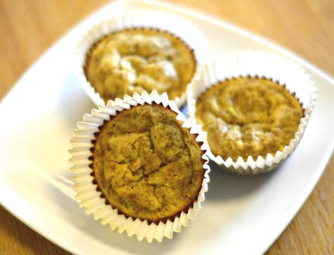

Bran Muffins
Nutritional Facts (per serving)
Calories 73 | Total Fat 3.6g | Saturated Fat 0.6g | Carbohydrates 10.7g | Fibre 4g | Protein 4.2g
Serves: 12
Ingredients
- 150g of almond flour
- 100g of wheat bran, ground
- 1 tsp. baking powder
- ½ tsp. salt
- 4 eggs
- 150ml of water
- 2 tbsp. runny honey
- 2 tsp. sweetener
- 200g grated courgette
Method
Step 1: Preheat the oven to 190°C or Gas Mark 5.
Step 2: Grease a muffin tray or 12 individual muffin tins.
Step 3: Mix the almond flour, wheat bran, baking powder, and salt together.
Step 4: Add the eggs, water, honey, sweetener, and courgette and mix thoroughly.
Step 5: Spoon the mixture into the muffin tins or muffin tray slots until each one is about two-thirds of the way full, then bake the muffins for 15-20 minutes.
Step 6: To check if they are cooked, poke a skewer (or similarly long, thin object) into the muffin. Once the skewer comes out clean, your muffins are done.